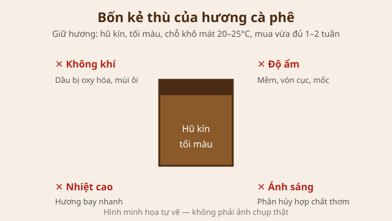

Dụng cụ pha cà phê tại nhà và cách bảo quản cà phê hạt, bột
Tác giả: Nguyễn Trung Đức
Người mới pha cà phê tại nhà thường mua dụng cụ theo cảm hứng: thấy phin đẹp thì mua phin, thấy phễu V60 đẹp thì mua thêm phễu, thấy bình French press tiện thì mua thêm bình. Sau vài tháng, kệ bếp đầy dụng cụ nhưng ly cà phê mỗi sáng vẫn không ổn định. Vấn đề không nằm ở số lượng dụng cụ, mà nằm ở chỗ bạn chưa biết mình cần gì, và cà phê mình mua về có được bảo quản đúng cách hay không.
Bài này giúp bạn mua đúng thứ cần mua trước, hiểu mỗi dụng cụ cho ra ly như thế nào, và giữ cho hạt và bột không mất hương trước khi pha. Bài không viết lại cách pha phin đầy đủ, vì cách đó đã viết trong Pha cà phê phin: tỉ lệ 25g – 80ml và cách chỉnh cho đúng gu của bạn. Bài chỉ nhắc lại lượng cốt cần dùng khi cần, và dẫn sang bài đó để bạn đọc lại các bước.
Bộ tối giản: bắt đầu với những thứ bạn đã có trong bếp
Trước khi mua bất kỳ dụng cụ nào, bạn hãy kiểm tra bếp của mình. Bạn đã có ấm đun nước, ly, thìa và một chiếc cân bếp nhỏ hay chưa. Nếu chưa có cân, hãy mua cân trước tiên. Cân giúp bạn lặp lại đúng lượng bột và lượng nước mỗi lần, và đó là yếu tố quyết định ly cà phê có ổn định hay không, hơn cả việc bạn dùng phin đắt hay rẻ.
Bộ tối giản cho người thích cà phê phin gồm phin inox, ấm đun, ly, cà phê bột và cân. Bạn không cần ấm cổ ngỗng khi pha phin, vì phin không cần rót nước theo vòng tròn nhỏ và chậm như pour over. Bạn cũng không cần máy xay ngay lúc đầu, nếu bạn mua bột xay sẵn với lượng nhỏ và dùng hết trong thời gian ngắn. Khi bạn đã pha ổn định bằng bột xay sẵn và muốn thử hạt nguyên, lúc đó mới cần nghĩ tới cối xay.
Bộ cơ bản đáng tiền hơn gồm bộ tối giản cộng thêm cối xay tay và hũ đựng kín. Cối xay giúp bạn xay vừa đủ cho mỗi lần pha, hạt nguyên giữ hương lâu hơn bột xay sẵn. Hũ đựng kín giúp cà phê không tiếp xúc nhiều với không khí, ánh sáng và mùi trong bếp. Hai món này không làm ly cà phê ngon ngay lập tức, nhưng giúp ly ngon của bạn lặp lại được nhiều lần hơn.
Bộ khám phá dành cho người muốn thử nhiều cách pha: bộ cơ bản cộng thêm phễu V60, giấy lọc, ấm cổ ngỗng và bình cold brew. Bạn chỉ nên mua bộ này khi đã pha phin ổn định và muốn thử vị trong, sáng của Arabica pha bằng pour over, hoặc vị êm của cà phê ủ lạnh. Nếu bạn mua bộ khám phá ngay từ đầu mà chưa pha phin ổn định, bạn sẽ có nhiều dụng cụ nhưng không biết ly nào ngon vì dụng cụ nào, ly nào dở vì hạt nào.
Bảng so sánh 5 dụng cụ phổ biến
Bảng dụng cụ dưới đây xếp các mức khởi đầu theo từng nguồn hướng dẫn độc lập. Các tỉ lệ và thời gian trong bảng là mức khởi đầu theo từng nguồn, không phải công thức duy nhất. Giá bán không ghi trong bảng, vì giá thay đổi theo cửa hàng và thời điểm, và bạn nên kiểm tra giá hiện tại trước khi mua. Mức chi phí trong bảng chỉ là tương đối: thấp, trung bình hay cao so với các dụng cụ còn lại.
| Dụng cụ | Cách chiết | Tỉ lệ khởi đầu theo nguồn | Thời gian pha | Vị đặc trưng | Độ khó |
|---|---|---|---|---|---|
| Phin Việt Nam | Nhỏ giọt chậm qua lỗ kim loại | Khoảng 1:4–1:5, tức 22–25g bột với 100–110ml nước, 88–92°C (Volcano); Bài pha phin dùng điểm bắt đầu đậm hơn, 25g với 80ml nước theo Message Coffee | Khoảng 4–6 phút | Đậm đà, giữ được dầu cà phê, hậu vị ngọt nhẹ | Dễ tới trung bình |
| Pour over V60 | Nhỏ giọt qua giấy lọc | Khoảng 1:15–1:16, tức 15g bột với 225–240ml nước | Khoảng 2 phút 30 giây tới 3 phút | Trong trẻo, sáng vị, hương thơm rõ ràng | Trung bình |
| French press | Ngâm bột trong nước rồi ép lưới | Khoảng 1:15, tức 30g bột với 450ml nước | Khoảng 4 phút rồi ép | Dày dặn, tròn vị, nhiều dầu cà phê | Dễ |
| Moka pot | Áp suất hơi nước trên bếp | Khoảng 1:7–1:8, tức 18g bột với 130–150ml nước | Khoảng 4–5 phút trên bếp lửa nhỏ | Đậm đặc và mạnh, gần với vị espresso | Trung bình |
| AeroPress | Ngâm rồi ép bằng áp suất tay | Tỉ lệ linh hoạt, thường đậm hơn V60 | Khoảng 1–2 phút (RoVi) | Sạch vị, tròn đều, cân bằng giữa đậm và nhẹ | Dễ tới trung bình |
Bạn sẽ thấy tỉ lệ của phin khác hẳn tỉ lệ của V60 và French press. Phin dùng ít nước hơn nhiều so với lượng bột, nên ly đậm đặc. V60 và French press dùng nhiều nước hơn, nên ly nhẹ và trong hơn. Đây không phải là lỗi ghi chép. Mỗi phương pháp dùng một tỉ lệ riêng, vì mỗi phương pháp chiết ra vị theo một cách riêng. Bạn đừng lấy tỉ lệ của V60 áp vào phin, hay lấy tỉ lệ của phin áp vào French press.
Thời gian pha trong bảng cũng có khoảng chênh giữa các nguồn. Ví dụ, bảng công thức chính của Volcano ghi V60 trong 2 phút 30 giây tới 3 phút, còn bảng so sánh nhanh cùng trang ghi V60 trong 3–4 phút; bài này dùng mức 2:30–3:00 làm điểm bắt đầu. Với French press, Volcano và RoVi đều ghi 4 phút, nên bài này dùng 4 phút làm điểm bắt đầu.
Độ xay cũng khác nhau theo dụng cụ. Phin dùng bột xay vừa, cảm giác như đường cát. V60 dùng bột xay trung bình, cảm giác như muối hạt. French press dùng bột xay thô, cảm giác như vụn bánh mì. Moka pot dùng bột xay mịn vừa, mịn hơn V60. Nếu bạn dùng cùng một cỡ xay cho mọi dụng cụ, ly sẽ không ngon, dù bạn pha đúng tỉ lệ và đúng thời gian. Bạn nên ghi lại cỡ xay cho từng dụng cụ vào nhật ký pha của mình, giống như mẫu nhật ký trong bài pha phin.
Chọn dụng cụ theo khẩu vị, thời gian và ngân sách
Bảng chọn dưới đây dựa trên sự khác nhau về vị và độ khó đã viết ở trên. Bạn chỉ cần trả lời ba câu hỏi: bạn thích vị nào, bạn có bao nhiêu thời gian mỗi sáng, và bạn muốn mua thêm dụng cụ hay không.
| Bạn muốn | Chọn | Vì sao |
|---|---|---|
| Ly đậm, uống với sữa đá, ít đồ nhất | Phin | Rẻ, bền, cho ly đậm và giữ dầu, hợp với Robusta |
| Ly trong, thơm, uống đen buổi sáng | Pour over V60 | Giấy lọc cho ly sạch, rõ hương hoa quả của Arabica |
| Ly dày, tròn, không muốn canh giờ rót | French press | Chỉ cần cho bột, rót nước, chờ 4 phút rồi ép |
| Ly đặc, mạnh, không mua máy espresso | Moka pot | Áp suất hơi nước cho ly gần espresso, hợp pha sữa |
| Ly sạch, linh hoạt, mang đi du lịch | AeroPress | Nhỏ gọn, pha nhanh, dễ thay đổi tỉ lệ |
Nếu bạn chỉ uống cà phê sữa đá mỗi sáng, bạn không cần V60 hay French press. Một chiếc phin tốt và một chiếc cân đã đủ. Nếu bạn thích uống cà phê đen và muốn nếm hương của từng loại hạt, bạn nên thử V60 sau khi đã pha phin ổn định. Nếu bạn bận rộn và không muốn canh giờ rót nước, French press là lựa chọn hợp lý hơn V60. Nếu bạn thích vị đậm nhưng không muốn mua máy espresso, Moka pot là lựa chọn đáng thử, nhưng bạn cần bếp và cần chú ý khi đun, vì bình moka dùng áp suất hơi nước trên bếp.
Một lỗi phổ biến là mua dụng cụ theo giá rẻ nhất mà không kiểm tra kích cỡ. Phễu V60 có nhiều cỡ, giấy lọc cũng có nhiều cỡ, mua sai cỡ sẽ không lắp vừa. Bình French press có nhiều dung tích, từ 350ml tới 1.000ml, mua bình quá lớn mà chỉ pha một ly sẽ khó canh tỉ lệ. Phin cũng có phin nhỏ và phin lớn, mua phin lớn mà chỉ pha một ly sẽ khó kiểm soát lượng nước. Trước khi mua, bạn nên đọc kỹ dung tích và cỡ giấy lọc trên bao bì, và hỏi người bán xem dụng cụ đó pha được bao nhiêu ly mỗi lần.
Vì sao cà phê mất hương nhanh
Cà phê rang xong bắt đầu mất hương ngay, vì các hợp chất tạo hương trong hạt rất dễ bay hơi. Có bốn yếu tố làm quá trình này nhanh hơn: không khí, độ ẩm, nhiệt và ánh sáng. Không khí làm dầu trong hạt bị oxy hóa, sinh ra mùi ôi và vị đắng gắt. Độ ẩm làm cà phê mềm, vón cục và tạo điều kiện cho nấm mốc. Nhiệt độ cao làm các hợp chất dễ bay hơi bay đi nhanh hơn. Ánh sáng, đặc biệt là ánh sáng mặt trời trực tiếp, làm phân hủy các hợp chất tạo hương.

Sơ đồ bốn kẻ thù của hương cà phê.
Hạt nguyên giữ hương lâu hơn bột rất nhiều, vì hạt còn lớp vỏ ngoài che chắn, diện tích tiếp xúc với không khí nhỏ. Khi xay, diện tích tiếp xúc với không khí tăng lên gấp nhiều lần, hương thoát ra rất nhanh. Bột xay để vài ngày đã khác hẳn lúc mới xay, để vài tuần thì phần lớn hương thơm tinh tế đã mất. Vì vậy, nếu bạn có thể, hãy chọn hạt nguyên và chỉ xay đúng lượng cần pha mỗi lần. Nếu bạn mua bột xay sẵn, hãy mua lượng nhỏ và dùng trong thời gian ngắn.
Mức rang cũng ảnh hưởng. Hạt rang đậm có nhiều dầu nổi trên bề mặt, bóng loáng. Lớp dầu này tiếp xúc trực tiếp với không khí nên dễ ôi hơn, mùi cũ xuất hiện sớm hơn hạt rang nhạt khô mặt. Với hạt rang đậm, bạn càng nên mua lượng nhỏ và dùng sớm.
Chọn hũ đựng và chỗ để cà phê
Hũ đựng tốt cần kín hơi, tối màu, vừa với lượng cà phê và không ám mùi. Nắp có gioăng cao su hoặc khóa cài kín là lựa chọn tốt. Hũ nắp vặn đơn giản cũng được nếu khít. Hũ không kín thì đựng chẳng khác gì để túi mở. Hũ thủy tinh trong đẹp nhưng để ánh sáng chiếu vào; nếu dùng hũ thủy tinh trong, bạn nên cất trong tủ tối. Hũ gốm, sứ, inox hoặc thủy tinh màu tối ít bị ảnh hưởng bởi ánh sáng hơn.
Bạn nên chọn hũ vừa với lượng cà phê. Hũ to mà ít cà phê thì phần không khí trong hũ nhiều, cà phê tiếp xúc với không khí nhiều hơn. Bạn có thể chia cà phê ra hai hũ: một hũ đang dùng, một hũ để nguyên chưa mở. Hũ từng đựng gia vị, tỏi hay đồ muối không nên dùng cho cà phê, vì cà phê hút mùi rất mạnh. Hũ nhựa cũ cũng dễ giữ mùi, nên bạn nên tránh dùng hũ nhựa đã đựng thực phẩm có mùi mạnh.
Túi gốc có van một chiều cũng là lựa chọn tốt. Nhiều túi cà phê có một van tròn nhỏ cho khí CO2 thoát ra mà không khí không vào. Nếu túi có khóa kéo và van, bạn ép bớt không khí rồi kéo kín, cuộn miệng túi, kẹp lại và để trong tủ tối là đủ cho vài tuần. Bạn nên để cà phê ở chỗ khô mát trong tủ bếp, xa bếp nấu và cửa sổ nắng. Nhiệt độ ổn định khoảng 20–25 độ C là mức tham khảo mà một hướng dẫn bảo quản ghi lại; điều quan trọng hơn con số là tránh nơi nóng và tránh dao động nhiệt lớn, ví dụ gần bếp hay lò nướng.
Hạt và bột: dùng trong bao lâu
Thời gian dưới đây là mức tham khảo về hương vị, không phải hạn sử dụng an toàn. Cà phê để lâu hơn vẫn uống được nếu không ẩm mốc, chỉ là kém thơm. Bạn nên đọc ngày rang và hạn sử dụng trên bao bì, và dùng thời gian dưới đây để quyết định mua bao nhiêu là vừa. Bảng dưới đây tổng hợp mức tham khảo từ Blog Thư Giãn và Hello 5 Coffee. Hai nguồn ghi mốc hơi khác nhau cho bột đã mở — Blog Thư Giãn ghi 1–2 tuần là hương còn khá, Hello 5 ghi 7–10 ngày là mốc tối ưu — vì một bên nói mức còn uống ngon, một bên nói mốc giữ hương tốt nhất; bài này dùng khoảng 1–2 tuần của Blog Thư Giãn trong bảng.
| Dạng | Cách giữ | Ngon nhất trong khoảng tham khảo |
|---|---|---|
| Hạt nguyên, túi chưa mở | Để nguyên túi có van một chiều, cất nơi khô ráo, mát và tối | Dùng trong vài tuần tới vài tháng sau ngày rang, tùy bao bì |
| Hạt nguyên, túi đã mở | Cho vào hũ đậy kín, tối màu, hoặc gấp kín miệng túi | Dùng hết trong vài tuần sau khi mở |
| Bột xay sẵn, túi chưa mở | Để nguyên túi chưa bóc | Dùng theo hạn ghi trên bao bì; hương nhạt dần theo thời gian |
| Bột đã mở | Cất trong hũ đậy kín, lấy bột bằng thìa khô | Trong một đến hai tuần đầu, hương vẫn còn khá |
| Bột tự xay tại nhà | Chỉ xay lượng đủ cho một lần pha | Pha ngay sau khi xay xong |
Một hướng dẫn bảo quản ghi túi 250g đã mở nên dùng trong 7–14 ngày để hạn chế oxy hóa. Con số này hợp với gia đình pha một đến hai ly mỗi ngày. Nếu bạn pha ít hơn, bạn nên mua gói nhỏ hơn, ví dụ gói 100g hoặc 200g, thay vì mua gói lớn rồi để lâu. Nếu bạn pha nhiều hơn, bạn có thể mua gói lớn hơn, nhưng vẫn nên chia ra hũ nhỏ đang dùng và túi lớn chưa mở.
Tủ lạnh và tủ đông: có nên không
Ngăn mát tủ lạnh thường không phải chỗ tốt để cất cà phê đang dùng hằng ngày, vì hơi ẩm và mùi thức ăn trong tủ lạnh dễ làm cà phê bị ẩm và ám mùi. Mỗi lần bạn lấy hũ ra khỏi tủ lạnh, hơi nước ngưng tụ trên hạt khi gặp không khí ấm, và độ ẩm đó làm cà phê mềm và mất hương nhanh hơn. Vì vậy, bạn nên để cà phê ở tủ bếp khô mát thay vì ngăn mát tủ lạnh.
Tủ đông là chuyện khác, nhưng cũng cần thận trọng. Một số hướng dẫn cho rằng bạn có thể chia cà phê thành từng phần nhỏ, đóng kín và để trong tủ đông để giữ lâu hơn, nhưng bạn không nên lấy ra vào nhiều lần, vì mỗi lần lấy ra là một lần hơi ẩm ngưng tụ. Bài này không khuyên bạn dùng tủ đông cho cà phê dùng hằng ngày. Nếu bạn mua nhiều cà phê cùng lúc, cách đơn giản và an toàn hơn là mua lượng vừa đủ dùng trong hai tuần, và mua tiếp khi gần hết, thay vì mua nhiều rồi tìm cách giữ lâu.
Vệ sinh dụng cụ và checklist mua sắm
Dụng cụ pha cà phê cần được vệ sinh sau mỗi lần dùng, vì dầu cà phê bám lại sẽ bị ôi và làm ly sau có mùi cũ. Phin cần rửa sạch bằng nước nóng, để khô hoàn toàn trước khi cất. Phễu V60 và giấy lọc dùng một lần thì bỏ giấy sau mỗi lần pha, rửa phễu bằng nước nóng. Bình French press cần rửa lưới lọc kỹ, vì bã cà phê dễ kẹt trong lưới. Bình moka cần rửa sạch và để khô, không để nước đọng trong khoang dưới. Cối xay cần vệ sinh theo hướng dẫn của nhà sản xuất, vì bột cũ kẹt trong cối sẽ làm mẻ xay sau có mùi cũ.
Checklist dưới đây giúp bạn kiểm tra trước khi mua thêm dụng cụ mới.
| Món | Bạn đã có chưa | Cần mua khi nào |
|---|---|---|
| Cân bếp nhỏ | Mua trước tiên, trước cả phin đắt tiền | |
| Phin inox cỡ nhỏ | Mua khi bắt đầu pha phin | |
| Hũ đựng kín, tối màu | Mua khi bắt đầu mua hạt nguyên | |
| Cối xay tay | Mua khi muốn xay tươi mỗi lần pha | |
| Phễu V60 + giấy lọc đúng cỡ | Mua khi muốn thử vị trong của Arabica | |
| Bình French press | Mua khi muốn pha nhanh mà không canh giờ rót | |
| Bình moka | Mua khi muốn ly đặc gần espresso mà không mua máy |
Trước khi mua một món mới, bạn hãy trả lời ba câu hỏi: món này giúp ly của bạn ngon hơn ở điểm nào, bạn sẽ dùng nó bao nhiêu lần mỗi tuần, và bạn đã có món nào làm được việc tương tự hay chưa. Nếu bạn không trả lời được câu đầu tiên, bạn chưa cần mua món đó. Nếu bạn chỉ dùng một món một lần mỗi tháng, bạn nên mượn thử hoặc mua loại rẻ trước khi mua loại đắt.
Kết luận
Pha cà phê ngon tại nhà không bắt đầu từ việc mua nhiều dụng cụ, mà bắt đầu từ việc mua đúng thứ cần mua và giữ cà phê đúng cách. Bạn chỉ cần một chiếc phin, một chiếc cân, một hũ đựng kín và cà phê tươi là đã có thể pha ly ổn định mỗi sáng. Khi bạn đã pha ổn định, bạn mới cần nghĩ tới cối xay, phễu V60 hay bình French press. Và dù bạn dùng dụng cụ nào, hãy nhớ bốn kẻ thù của hương cà phê là không khí, độ ẩm, nhiệt và ánh sáng, và hãy mua lượng vừa đủ dùng trong một đến hai tuần. Làm được hai điều đó, ly cà phê của bạn sẽ ngon hơn không phải vì bạn mua thêm đồ, mà vì bạn đã giữ được hương của hạt từ lúc mua về tới lúc pha.
Nguồn tham khảo
- Volcano Coffee, "Các Phương Pháp Pha Chế Cà Phê: So Sánh 8 Cách" — phin tỉ lệ 1:4–1:5, 22–25g với 100–110ml nước, 88–92°C, 4–6 phút; V60 tỉ lệ 1:15–1:16, 15g với 225–240ml nước, 92–96°C, 2 phút 30 giây tới 3 phút; French press tỉ lệ 1:15, 30g với 450ml nước, 93–96°C, 4 phút; moka pot tỉ lệ 1:7–1:8, 18g với 130–150ml nước, 4–5 phút (truy cập 23/11/2026): https://volcanovietnam.com/cac-phuong-phap-pha-ca-phe-thu-cong
- RoVi Coffee, "Dụng cụ pha cà phê tại nhà: danh sách cho người mới" — phin là dụng cụ rẻ và bền nhất cho người Việt; V60 cần phễu, giấy lọc đúng cỡ, ấm cổ ngỗng và cân; French press chỉ cần cho bột xay thô, rót nước nóng, chờ khoảng 4 phút rồi nhấn pít-tông; bộ tối giản gồm phin inox, ấm đun, ly và cà phê bột (truy cập 23/11/2026): https://rovicoffee.com/tin-tuc/dung-cu-pha-ca-phe-tai-nha-danh-sach-day-du-cho-nguoi-moi-1790742370702
- Blog Thư Giãn, "Bảo quản cà phê hạt và bột ở nhà: hũ, chỗ để, thời gian" — cà phê cần tránh không khí, độ ẩm, nhiệt và ánh sáng; đựng trong hũ kín, tối màu, để ở chỗ khô mát trong tủ bếp; hạt nguyên giữ hương lâu hơn bột rất nhiều; bột đã mở nên dùng trong một đến hai tuần; ngăn mát tủ lạnh thường không phải chỗ tốt cho cà phê dùng hằng ngày vì hơi ẩm và mùi thức ăn (truy cập 23/11/2026): https://blogthugian.com/bao-quan-ca-phe-hat-va-bot
- Hello 5 Coffee, "Bảo quản hạt cà phê: 10 mẹo giữ trọn hương vị 2025" — bốn kẻ thù là oxy, ánh sáng, nhiệt độ và độ ẩm; bảo quản ở nhiệt độ ổn định khoảng 20–25°C; túi 250g đã mở nên dùng trong 7–14 ngày; hạt nguyên giữ hương lâu hơn vì diện tích tiếp xúc với oxy nhỏ (truy cập 23/11/2026): https://hello5.vn/bao-quan-hat-ca-phe-10-meo-giu-tron-huong-vi-2025-goi-y-tot-nhat/